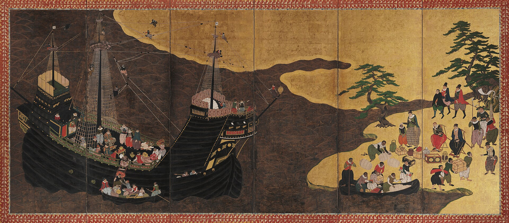

The sociologist George Ritzer, in a book published in 1993 and now in its ninth edition, used the term McDonaldization to describe the process by which the principles of the fast-food restaurant, efficiency, calculability, predictability, and control, have come to dominate ever more sectors of American and global social life. The title is deliberately provocative, and its provocation was successful. The term has entered the sociological vocabulary as a shorthand for the homogenizing effects of the global spread of American corporate culture. Whether or not Ritzer's analysis is fully persuasive, the phenomenon he describes is real. The same brands, the same entertainment, the same architectural forms, and increasingly the same social practices appear in cities on every inhabited continent. Whatever local color remains is often a tourist-facing performance of authenticity rather than the genuine article.

But the picture is more complex than simple homogenization. Cultural globalization is not a one-way street. American culture influences global culture, but global cultures influence American culture, and all cultures change through their encounters with each other in ways that produce not simply homogenization but hybridization. The Chinese city that builds a McDonald's also produces a distinctive Chinese McDonald's culture that is not quite the same as the American original. The music that emerges from the encounter between American hip-hop and West African musical traditions is not simply American or African but something new that belongs to both.
- Globalization
- The process by which economic, political, and cultural activity increasingly operates at a global rather than a national or local scale. Contemporary globalization is driven by communications technology, international trade, and the mobility of capital and people.
- Cultural Homogenization
- The argument that globalization produces convergence of cultural forms, values, and practices across the world, reducing the diversity of distinct local cultures. Often associated with concerns about American cultural imperialism.
- Cultural Hybridization
- The argument that cultural contact between global and local does not simply displace local culture but produces new, hybrid cultural forms that combine elements of both. Associated with theorists such as Homi Bhabha and Nestor Garcia Canclini.
- Glocalization
- Sociologist Roland Robertson's term, blending "global" and "local," for the simultaneous globalization and localization of social life: global forms are adopted but adapted to local conditions, producing outcomes that are neither purely global nor purely local.
From the perspective of Durkheim's sociology, cultural globalization raises a profound question about solidarity. Organic solidarity, Durkheim argued, depends on a shared normative framework: widely held values about what work is for, what people owe each other, and what the social whole is that individuals are part of. Globalization puts pressure on all three of these. It disrupts traditional normative frameworks without necessarily replacing them with equally robust alternatives, it extends economic interdependence to a global scale that outstrips any existing normative community, and it brings people into contact with alternative ways of life that challenge the taken-for-granted character of their own norms. This is not simply threatening. The encounter with genuine difference is one of the conditions of moral development. But it also creates genuine anomic risk, the normlessness that Durkheim identified as modernity's characteristic pathology.
Whether global capitalism can be regulated by global institutions with genuine normative authority, whether democratic governance can operate at a scale larger than the nation-state, whether a global culture can provide the moral framework that national and local cultures once provided: these are among the most pressing political and social questions of the contemporary world. Sociology does not answer them, but it provides the vocabulary for asking them clearly.
Before Weber argues that one form of economic life is peculiar to the modern West, he surveys the rest of the world and grants it a great deal. Capitalistic enterprises, in his definition, existed in China, India, Babylon, Egypt, and the Mediterranean world of antiquity, and not as isolated ventures. Refined knowledge and careful observation, he grants, flourished above all in India, China, Babylonia, and Egypt. China had printing. China and the Islamic world had academies. Money-lenders financed wars, building, and tax-farming in Babylon, Hellas, India, China, and Rome.
His question is narrower than it is often remembered. Why did one particular bundle appear together in the West: experimental science, a systematic jurisprudence, a state resting on trained officials, and rationally organized, formally free labour? The survey is what makes the question sharp, and it is also where a reader should press. Ask what Weber counts as rational, and whether the definition settles the comparison before the evidence does.
Homogenization, hybridization, and glocalization are not three theories competing to win. They are three lenses that catch different features of the same set of events, and a mature answer usually names which lens fits which part of a given case rather than picking one lens for everything. Ritzer's McDonaldization is a homogenization argument built on a rationalization argument, Weber's, that is a full century older than the fast-food restaurant it eventually got applied to. Weber’s own account of it, ending in the image of the iron cage, is the subject of Text Study 14B.